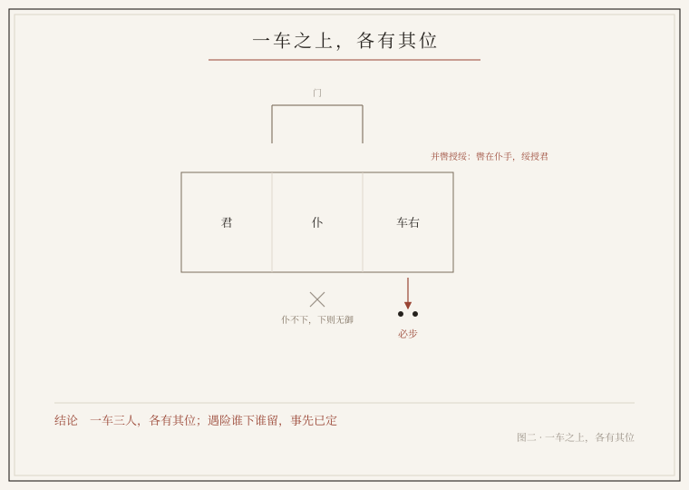

曲礼上 · 一·一百一十七 · 第 115 课
君出上车：仆把六辔并在一手，另一手递上正绥；左右陪位之臣退避，车行而从者趋；至大门，君按仆手、回头命车右上车；过门闾沟渠，车右必下车。
说什么事：君出就车，则仆并辔授绥。左右攘辟，车驱而驺。至于大门，君抚仆之手而顾，命车右就车；门闾、沟渠必步。
落在哪一层：仪，兼及礼意。讲的是「交接」与「避险」。
为何编在此位：上节讲未出之事，此节讲已出之事。一静一动，合成一次完整的行车。
【经】君出就車，則僕并轡授綏。左右攘辟，車驅而騶。至於大門，君撫僕之手而顧，命車右就車；門閭、溝渠必步。
【注】車上僕所主。謂群臣陪位侍駕者。攘，卻也；或者攘，古讓字。車右，勇力之士，備制非常者。君行則陪乘，君式則下步行。
并辔授绥 疏「仆并六辔及策置一手中，所余一空手取正绥授与君」；「当右手并辔，左手授绥，转身向后，引君上也」。
攘辟 注「攘，却也；或者攘，古让字」。疏「左右侍者悉迁却以辟车，使不妨车行」。
驺 疏「左右从者，疾趋从车行也」。
抚仆之手 疏「抚，按止也。仆手执辔，车行由仆，君欲令驻车，故君抑止仆手」。
顾 疏「顾，回头也……回首曰顾」。
车右 注「勇力之士，备制非常者」。疏「车行则有三人，君在左，仆人中央，勇士在右」。
必步 疏「步谓下车也……一则君子不诬十室，过门闾必式，君式则臣当下也；二则沟渠是险阻，恐有倾覆，故勇士亦须下扶持之」。
仆不下 疏「车行由仆，仆下则车无御，故不下也」。
君出来上车，仆把六辔并在左手，右手递上正绥。左右陪位之臣退开避车，车行而众从者疾趋随后。到了大门，君按住仆的手，回头命车右上车；凡过门闾、沟渠，车右必须下车步行。
一节五事，两次交接：先是辔与绥的交接，后是君与车右的交接。中间一个「攘辟」，是众人替车让路。全节写的是：车一动，所有人的位置都要重排。
第一层 授绥 绥是登车之索。授绥即是授车，一递一受，主客分明。
第二层 攘辟 注两读：却也，或古「让」字。无论读哪一义，都是把人退开，让车过去。礼让在此处是物理的。
第三层 抚手而顾 君按仆手使驻，回头命车右。一个动作里有两层意思：止与召。疏解得好：「君欲令驻车，故抑止仆手。」
第四层 必步与不下 车右下车，仆不下。同一辆车，两个人两种处置：勇士下车扶持，御者不能下。分工之实，见于危处。
与今日何干 谁在什么位置、遇险时谁下谁留，事先要定。临事再议，必乱。
| 左 | 右 |
|---|---|
| 并辔授绥 | 辔在仆手，绥授君 |
| 左右攘辟 | 陪位者迁却，让车行 |
| 车驱而驺 | 从者疾趋随车 |
| 抚仆之手 | 按止其手，令车驻 |
| 顾命车右就车 | 回首召勇士上 |
| 门闾沟渠必步 | 车右下车扶持 |
| 仆不下 | 仆下则车无御 |
画车行至一处门洞之前：车左侧有一只手按在持缰的手上（只画两只手的局部，不画人）；车右位置下方画一双落地的脚印，车中央位置下方留空无一印。车后拖出两道向后的短促足迹，示意从者疾趋。门洞以两道竖线夹一道横楣示意。不写文字。赭色只用在两只手相按处。
